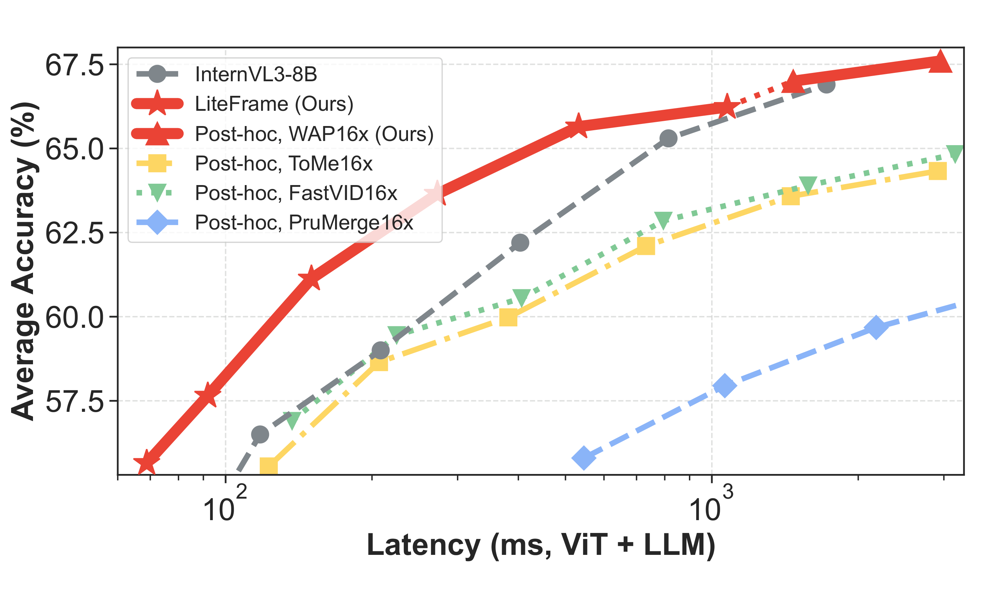
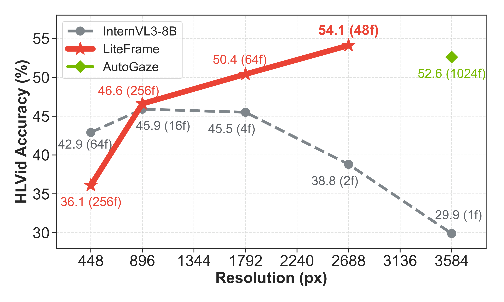
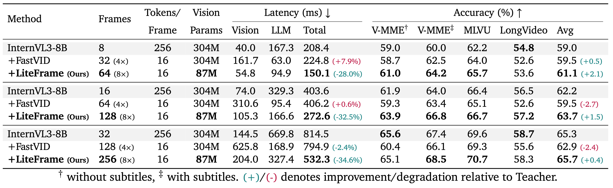
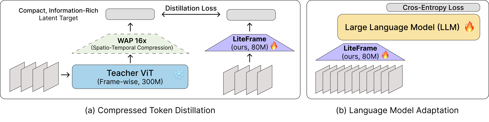

LiteFrame: Efficient Vision Encoders Unlock Frame Scaling in Video LLMs
1 Google DeepMind
2 Seoul National University
Seoul National University
TL;DR: We propose LiteFrame, a highly efficient video encoder for Video Large Language Models that unlocks scalable, long-form video understanding by resolving inefficiencies in both the LLM and the ViT.
The fundamental challenge in scaling Video Large Language Models (Video LLMs) to long-form video lies in managing the explosion of visual-token context length. Existing strategies predominantly focus on "post-hoc" token reduction—reducing visual tokens after feature extraction to alleviate the LLM's computational overhead. While these methods effectively reduce the number of visual tokens, we observe that the primary latency bottleneck then shifts from the LLM to the expensive per-frame processing of the vision encoder.
To address this, we introduce LiteFrame, a strong, yet highly efficient video encoder backbone for Video LLMs. To train LiteFrame, we propose Compressed Token Distillation (CTD), a novel training framework that teaches a compact student vision encoder to directly predict information-dense, spatio-temporally compressed representations produced by a large teacher vision model, effectively bypassing redundant computation. When coupled with further Language Model Adaptation (LMA), this approach results in a new latency-accuracy Pareto frontier. Our results demonstrate a new potential path to unlocking longer-form video understanding under fixed compute budgets.
LiteFrame redefines the performance-latency trade-off across multiple video understanding benchmarks, including Video-MME, MLVU, and LongVideoBench.



To train LiteFrame, we propose Compressed Token Distillation (CTD) and Language Model Adaptation (LMA).

@article{kim2026liteframe,
title={LiteFrame: Efficient Vision Encoders Unlock Frame Scaling in Video LLMs},
author={Kim, Jihwan and Parthasarathy, Nikhil and Qin, Danfeng and Hur, Junhwa and Sun, Deqing and Han, Bohyung and Yang, Ming-Hsuan and Gong, Boqing},
journal={arXiv preprint},
year={2026}
}